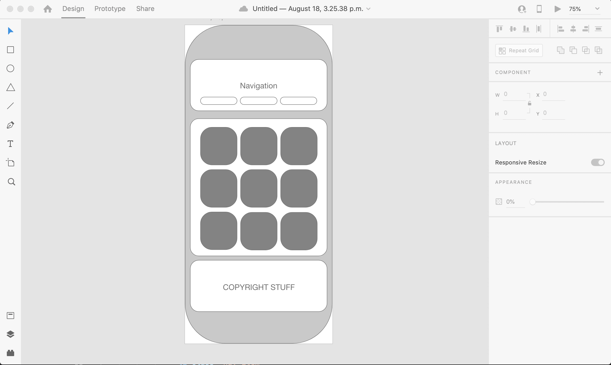

Rapid prototyping is quickly creating a rough version of the final product. It is used to layout conceptual ideas before investing too much time in a particular design aspect or piece of functionality. I personally use rapid prototyping tools to do initial layout for websites and apps. It is akin to creating an outline for an essay before righting the essay.
There is quite a variety of modern rapid prototyping software out there. Some popular tools include Sketch, Axure and Adobe XD. I have a fair amount of experience with Adobe XD so I will discuss that specific tool. That being said, most of the modern rapid prototyping products are all very similar.
Adobe XD is a modern, extensive and collaborate rapid prototyping tool for user interfaces offered by Adobe. It is included with an Adobe Creative Cloud subscription and there is a free starter edition to try it out.
The biggest selling point for me is the similarities it has with other Adobe design applications. IT is a very familiar program if you have any experience with Photoshop, Illustrator or InDesign. It focuses on streamlining the interface so the user can focus purely on the basic components of the layout and user experience.
Some key features of Adobe XD that may distinguish it from other rapid prototyping tools are its ability to integrate with other popular design tools, a library of extensions which provide added functionality as needed and most importantly the collaboration tools to quickly and efficiently share prototypes with other team members.
Below I have included an image of a low fidelity iPhone app mockup that was I able to complete quite rapidly.
